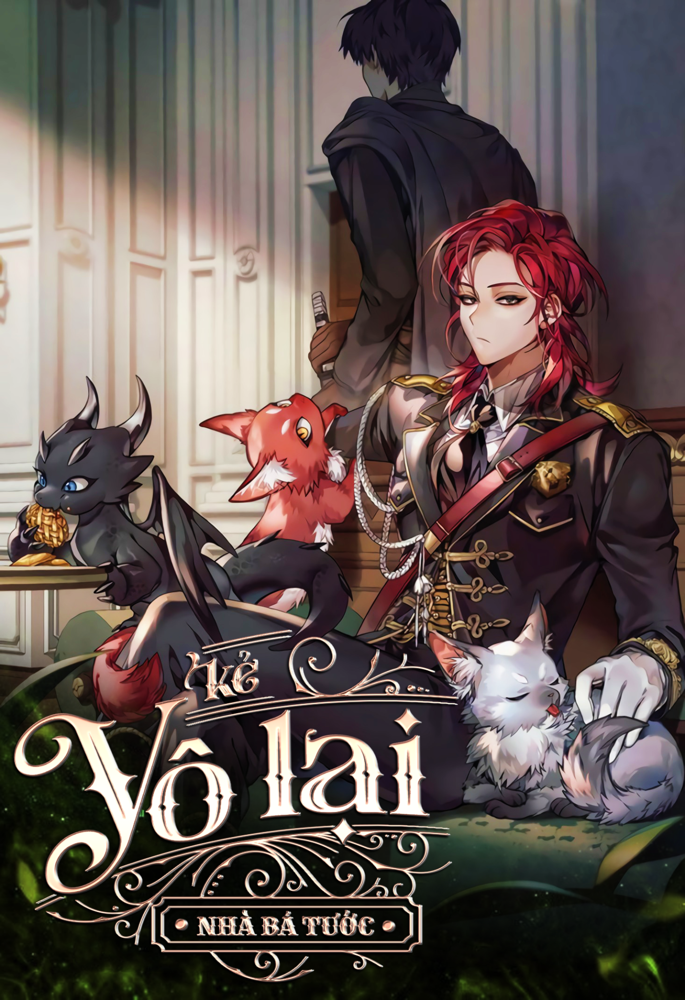

Lout of Count’s Family
Thể loại: Hành động, Phiêu lưu
Mô tả:
Khi mở mắt ra thì tôi đã ở trong một cuốn tiểu thuyết.
[Sự ra đời của một Anh hùng].
[Sự ra đời của một Anh hùng] là cuốn tiểu thuyết xoay quanh cuộc phiêu lưu mạo hiểm của
nhân vật chính – Choi Han – một cậu học sinh cấp III bị dịch chuyển tới một chiều không
gian khác ngoài Trái đất, cùng với sự khai sinh của đông đảo những vị anh hùng trên lục
địa.
Tôi đã trở thành một phần của cuốn tiểu thuyết đó dưới thân phận một kẻ vô lại của gia
tộc Bá tước, cũng là gia tộc cai quản vùng lãnh thổ nơi ngôi làng đầu tiên mà Choi Han
ghé tới tọa lạc.
Vấn đề ở đây là tính cách của Choi Han đã trở nên vặn vẹo sau khi ngôi làng và kể cả mọi
người dân sống ở đó, đều bị tận diệt dưới tay bọn sát thủ.
Mà vấn đề còn nan giải hơn cả là thật ra cái thằng vô lại ngu ngốc mà tôi vừa trở thành
này đã chẳng biết gì về sự tình của ngôi làng thì chớ, lại còn gây rối với Choi Han để
rồi bị đánh cho một trận nhừ tử.
“… Thế nào cũng có chuyện cho mà xem.”
Linh tính mách bảo rằng thể nào mấy chuyện trầm trọng cũng sẽ xảy đến với tôi.
Nhưng chung quy vẫn đáng giá để tôi cố biến nó thành cuộc đời mới của mình.
Tóm tắt cốt truyện:
Câu chuyện xoay quanh Kim Rok Soo, một người đàn ông hiện đại chết vì tai nạn và xuyên không vào thế giới trong một cuốn tiểu thuyết mà anh từng đọc. Anh nhập vào thân xác Cale Henituse kẻ bị cả xã hội khinh thường, mang tiếng “thế vật đứa con vô dụng của nhà bá tước”, nghiện rượu, lười biếng và sớm sẽ gặp kết cục bi thảm trong cốt truyện gốc.
Bình luận
Vui lòng đăng nhập để bình luận.